Local Calm
The coast is referenced through tone, texture, and atmosphere, giving the practice a familiar regional identity without becoming themed or literal.
Bay Area Professional Counseling needed a visual identity that felt calm without feeling clinical, refined without feeling distant, and local without becoming decorative. The Quiet Coast direction gives the practice a warm, grounded presence that helps clients feel oriented before they read a single paragraph.
The updated identity brings together a hand-lettered coastal wordmark, a steady professional descriptor, and a small rooted botanical mark. It feels personal, established, and intentionally local.
The design is built around one emotional promise: you do not have to navigate it alone. Every major choice supports that idea through softness, clarity, warmth, and a sense of place.
People often arrive at a counseling website carrying stress, uncertainty, grief, or the quiet hope that something could feel different. A site like this should not feel like a hospital form, a wellness trend, or a generic therapy template. It should feel like an open door.
The Quiet Coast design uses familiar Gulf Coast references to create that open-door feeling. Beach grass, oyster sand, Mobile Bay blue, marsh sage, warm paper texture, and sunset gold are not used as decoration for decoration's sake. They give the practice a sense of home. They remind clients that care can be professional and still feel human, local, and deeply welcoming.
The result is a brand that feels compassionate, rooted in place, and quietly confident. It is editorial enough to feel polished, soft enough to feel approachable, and restrained enough to keep the focus on the people seeking care.
The coast is referenced through tone, texture, and atmosphere, giving the practice a familiar regional identity without becoming themed or literal.
Southern sunset colors and paper-soft neutrals replace hard clinical whites, creating a visual system that feels gentle and reassuring.
The imagery suggests familiar places, familiar wildlife, and a sense of being held by a landscape clients may already know.
Deep Bay anchors the system with clarity and professionalism, so the brand remains credible even when the visual language is soft.
The palette is intentionally quiet. Warm whites and sand tones create the canvas. Blue, sage, and deep bay tones provide regional character and structure. Sunrise Gold is held back for warmth, emphasis, and moments of optimism.
The updated logo works because it balances warmth and authority. The expressive wordmark gives the brand a human hand, while the professional descriptor keeps the practice clear and credible.
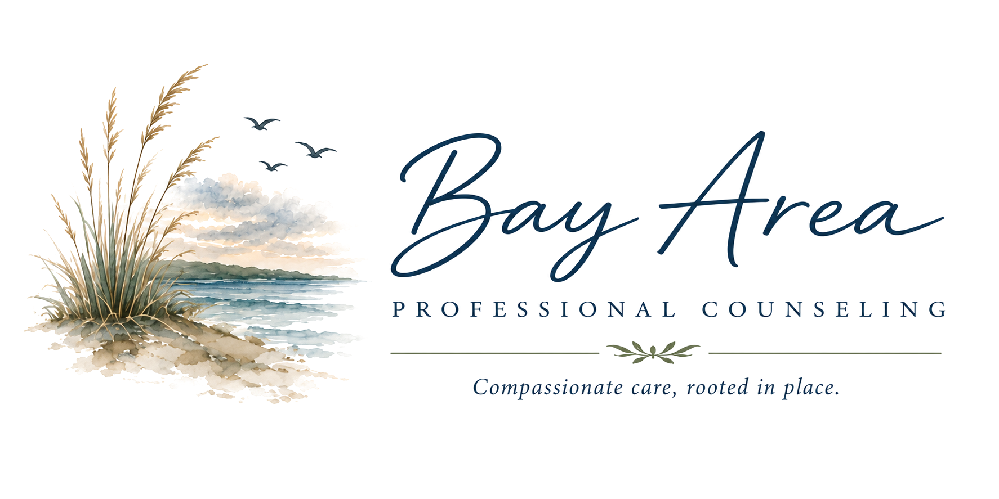
The script wordmark feels approachable and personal, which matters for counseling. It reads less like an institution and more like a steady local practice with real people behind it.
The composition has enough refinement to feel established, but enough softness to lower the emotional temperature. The small rooted mark reinforces care that is grounded, compassionate, and connected to place.
The assets are designed to be felt before they are noticed. Watercolor washes soften the digital experience, while local coastal illustrations create recognition, warmth, and a sense of belonging.
Pelicans and egrets are familiar Gulf Coast presences. They add life and regional memory without making the site feel playful in the wrong places.
Docks, shorelines, driftwood, and oyster forms quietly locate the practice near Mobile Bay. They suggest steadiness, return, and a landscape people already understand.
Porches, chairs, journals, and coffee bring the brand indoors. They make the experience feel hospitable and human rather than purely clinical.
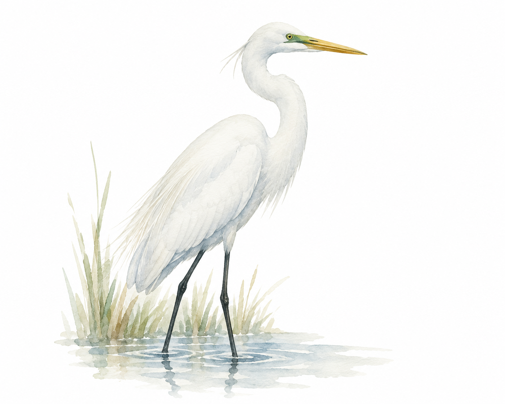
Egret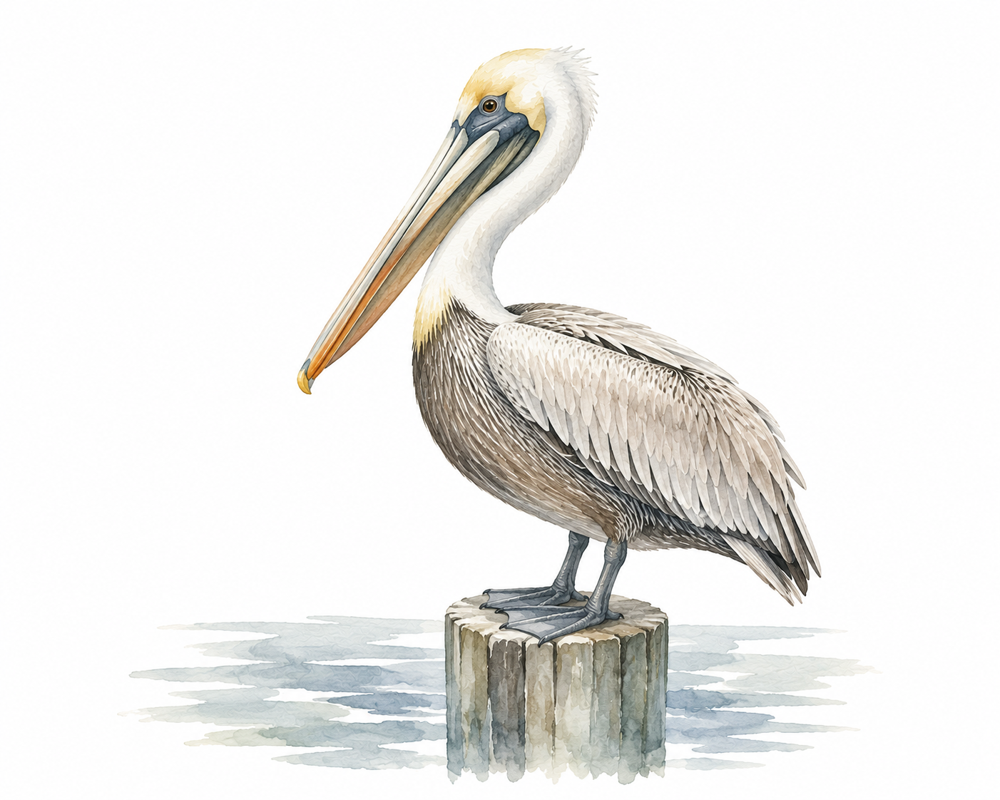
Pelican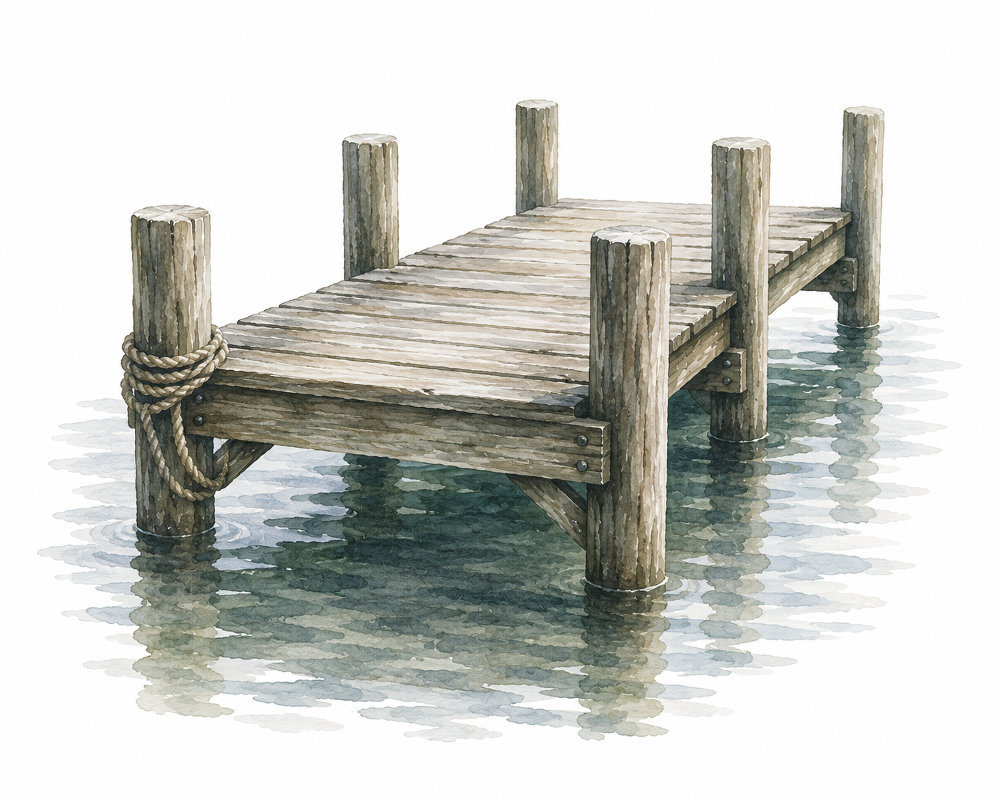
Dock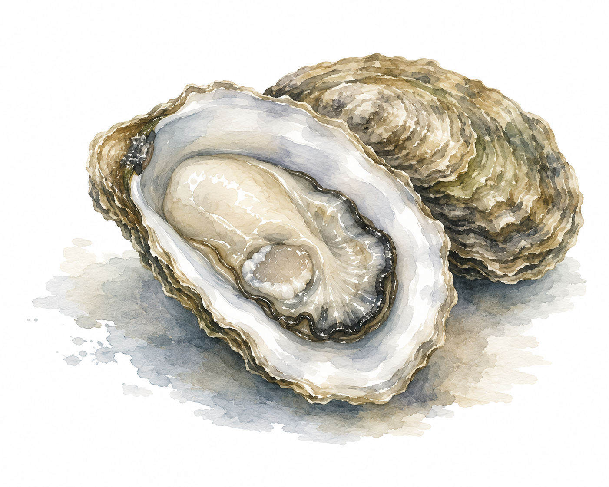
Oyster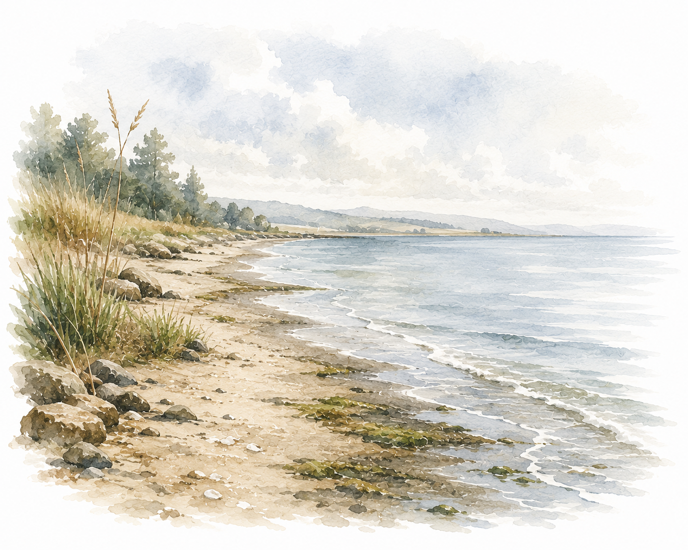
Shoreline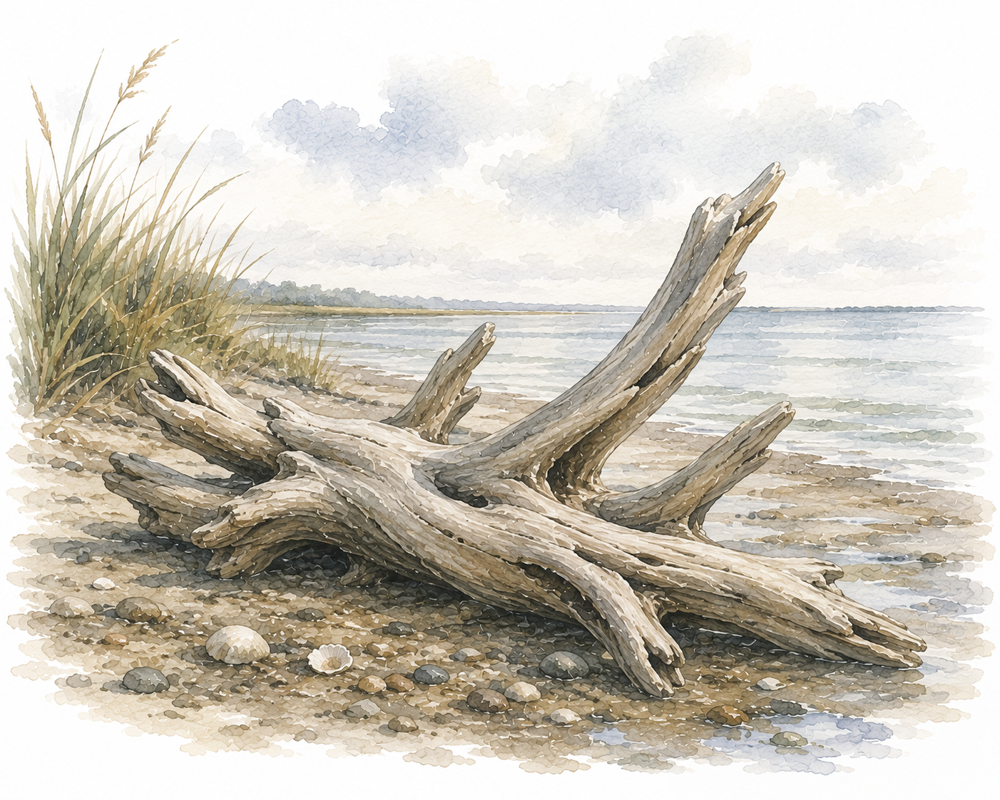
Driftwood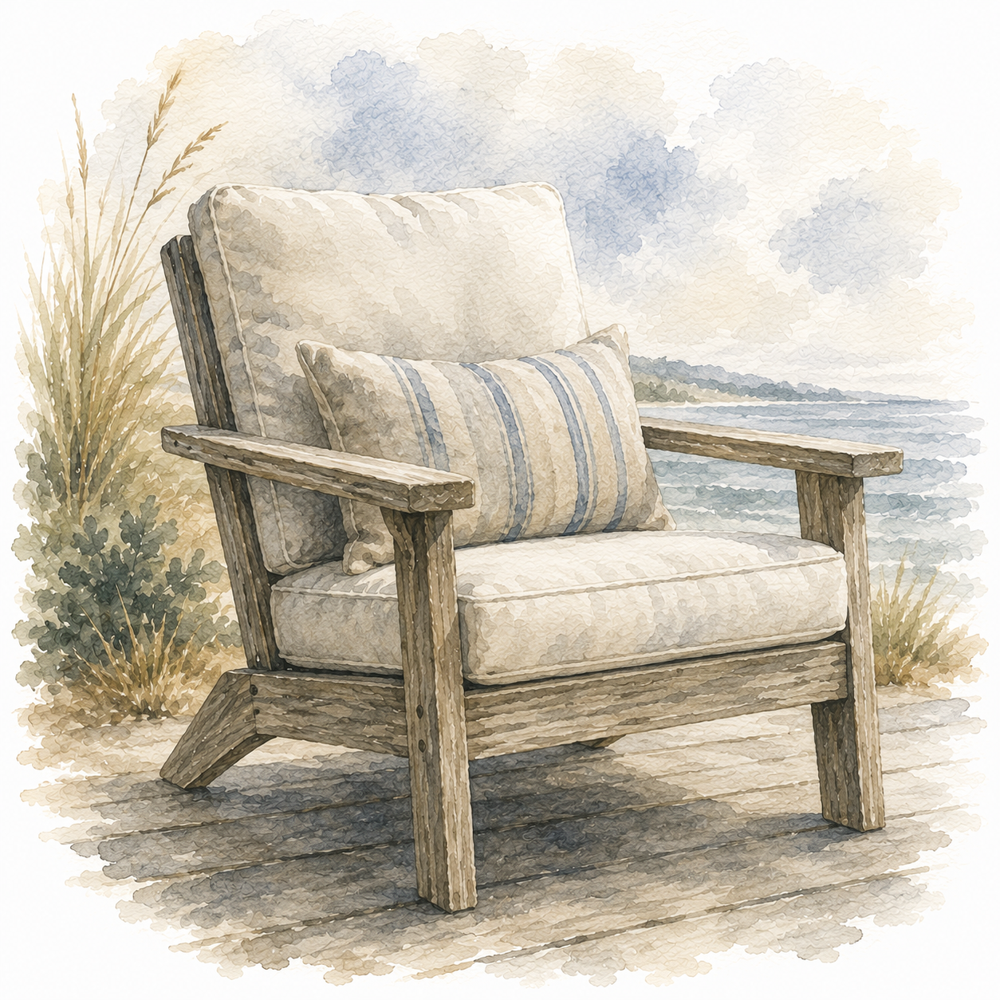
Chair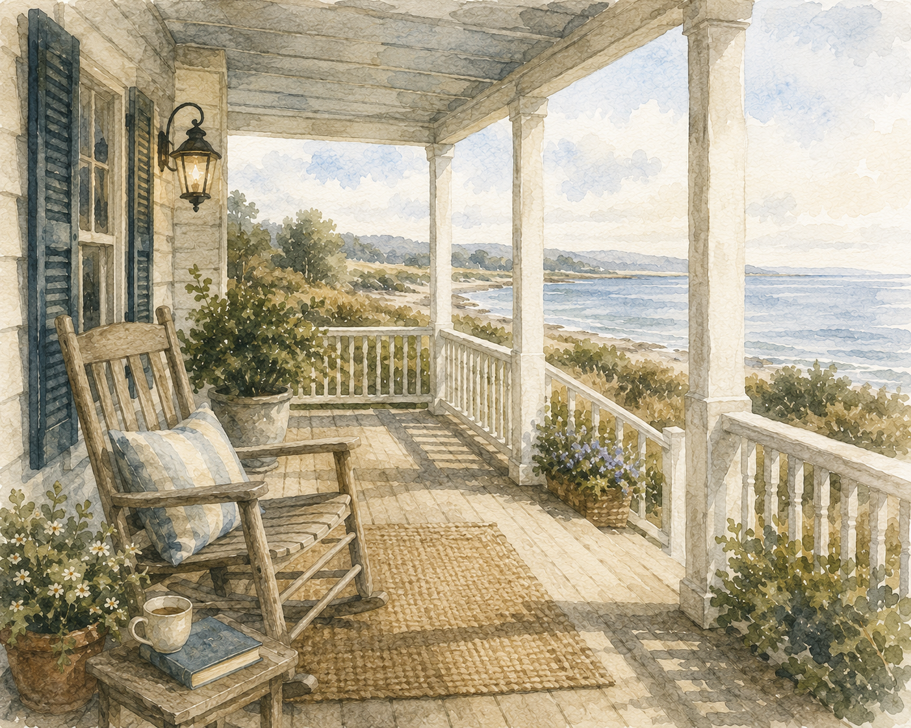
Porch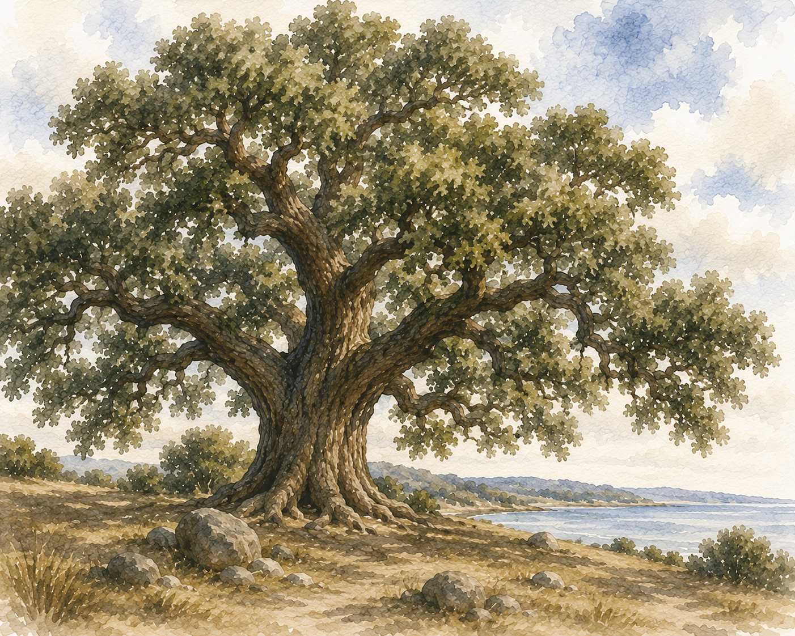
Oak TreeThe words should feel warm, clear, and quietly confident. The brand should avoid institutional language, exaggerated wellness promises, and anything that sounds like a hospital brochure. The tone is calm enough for someone in distress and refined enough for someone evaluating professional care.
Navigation, therapist information, appointment steps, and privacy guidance are direct and easy to scan.
The design makes room for warmth, imperfection, and softness, helping clients feel met rather than processed.
Mobile Bay references help the practice feel like it belongs to this community, not like a generic counseling template.
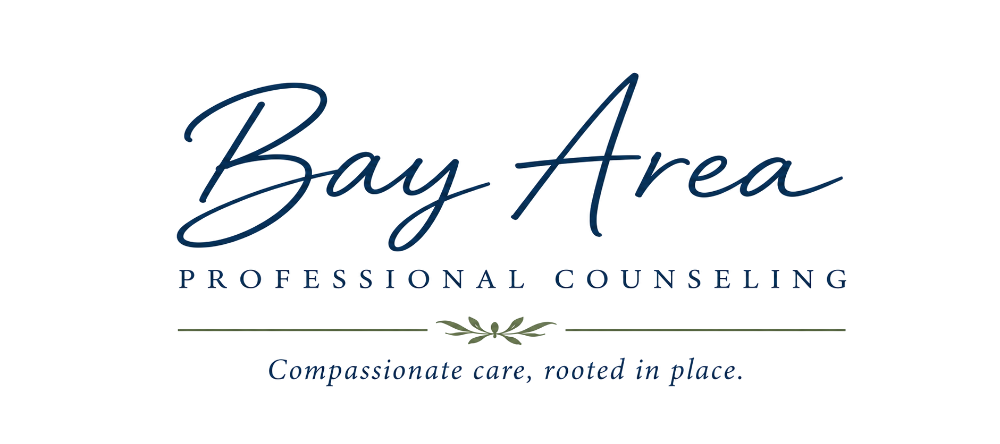
This identity gives Bay Area Professional Counseling a digital home that feels like the care it offers: warm, steady, thoughtful, local, and never generic.